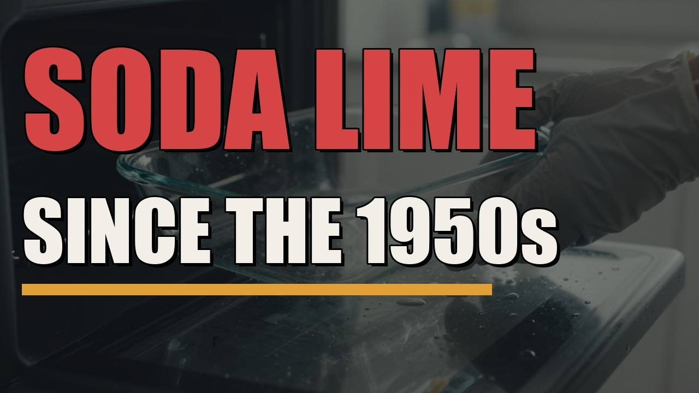
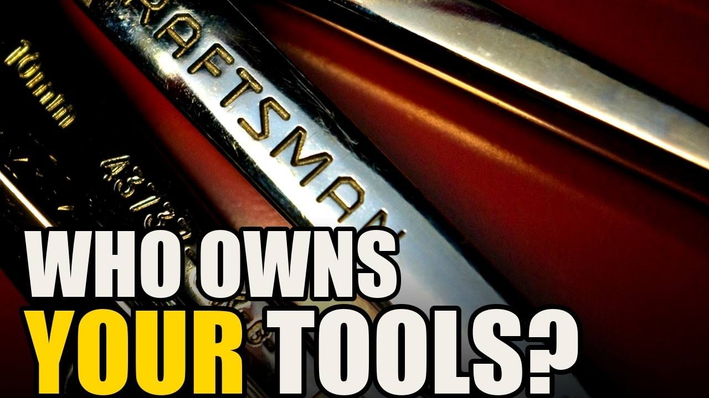
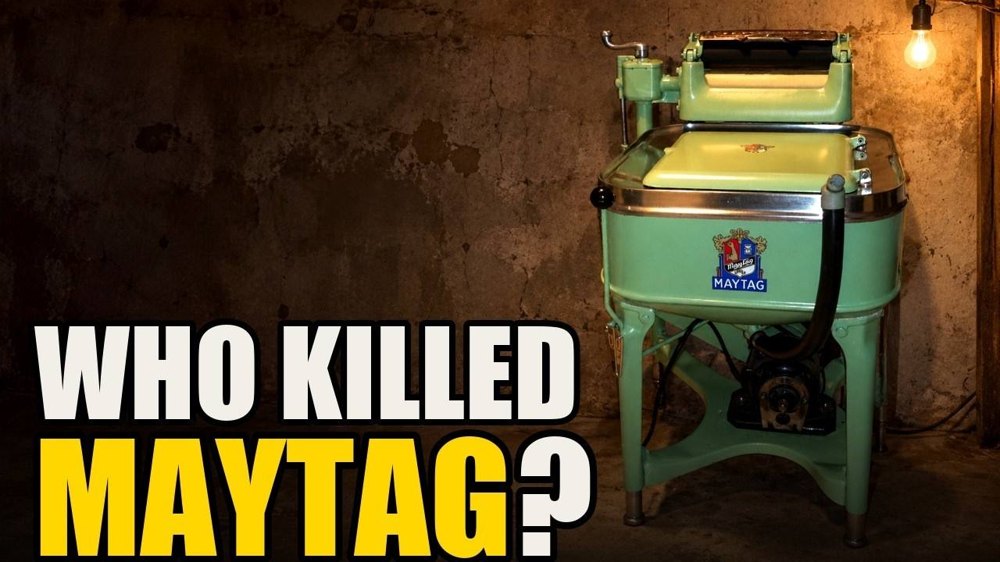

Who actually builds it, what changed on the factory floor, and which version is still worth buying. Every number on screen has a source, and the sources are printed on the page.

The truck in this box says Tonka on the side. Tonka did not make it.
September 22, 2026Read the episode →
Walk down the refrigerator aisle and you will count a dozen names.
September 21, 2026Read the episode →
There is a dish in your kitchen right now with the word Pyrex on the bottom.
September 20, 2026Read the episode →
Walk up to the tool wall at Home Depot and read the names.
September 17, 2026Read the episode →
For forty-seven years, Maytag paid actors to sit in a chair and do nothing.
September 15, 2026Read the episode →
In 2018, a small washer company in Wisconsin did what the federal rules asked and made its top-loader efficient.
September 15, 2026Read the episode →
In 1927, a Sears catalog offered a washing machine under a name almost nobody had heard of: Kenmore.
September 14, 2026Read the episode →The name on the box almost never belongs to the company that makes the thing. This page lists every brand we have taken apart on the channel, who owns it today, and where the work is actually done. Every line comes from an episode and…
36 brands · 10 owners Open the map →The episodes tell the story. These pages tell you what is on sale today, what it is made of, and how to read the label on the one you already own.
Two kinds of glass are sold as oven bakeware in America, and only one of them survives a real temperature swing. Borosilicate takes a change of about…
27 to buy · 27 entriesSee the guide →Buying guideMost of the names on a hardware store wall no longer belong to the company that forged the tool. Four do, and they still run their own plants in the…
17 to buy · 18 entriesSee the guide →Repair guideWhen a washer's drum bearing wears out, some makers sell you the bearing and some sell you half a tub. The first part of this page lists every part…
11 to buy · 20 entriesSee the guide →Repair guideSpeed Queen washers are sold through appliance dealers, not through Amazon, and the company runs no repair fleet of its own. The parts, though, are…
7 to buy · 10 entriesSee the guide →Buying guideSeven refrigerator badges in one American aisle are owned by three companies, and a seventh is a name that hires a factory. A full-size refrigerator…
4 to buy · 12 entriesSee the guide →Buying guideTwo Tonka lines sit side by side under the same yellow paint. One still has a real steel dump bed; the other is plastic and zinc alloy. This page…
4 to buy · 6 entriesSee the guide →Buying guidePremium interior paints from three different companies run from 40 to 46 percent volume solids on their own data sheets. That number, the binder and…
3 to buy · 7 entriesSee the guide →Buying guidePlastic model kits are reissued for decades from the same steel molds, often in new boxes with new artwork. The five checks on this page date the…
4 to buy · 12 entriesSee the guide →Each figure in an episode carries a marker, and the numbered source is printed at the bottom of its page. If one is wrong, tell us and we fix it.
Prices move and ratings are gamed. We say what a thing is made of and who makes it, and let the shop show you the price.
Not the brand on the box — the company that runs the plant, and the country it runs in.